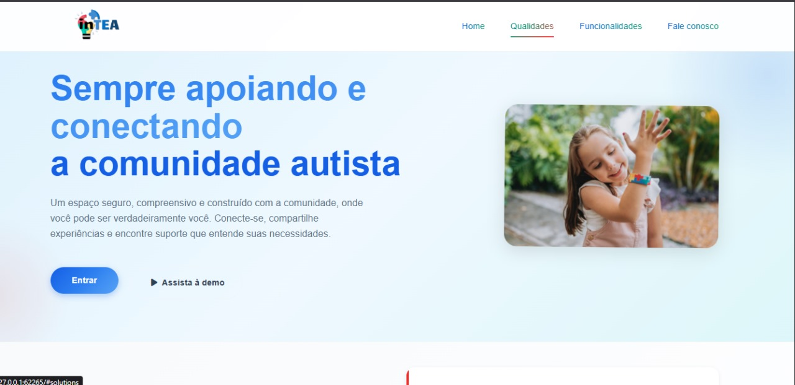
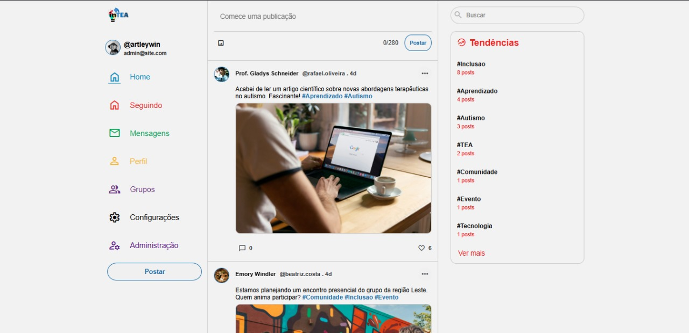
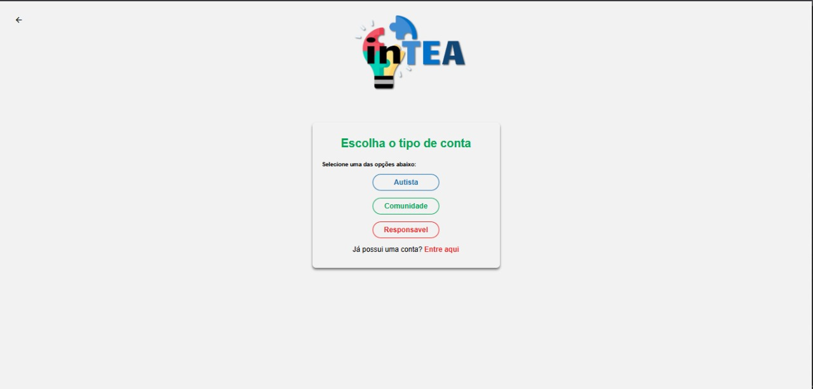
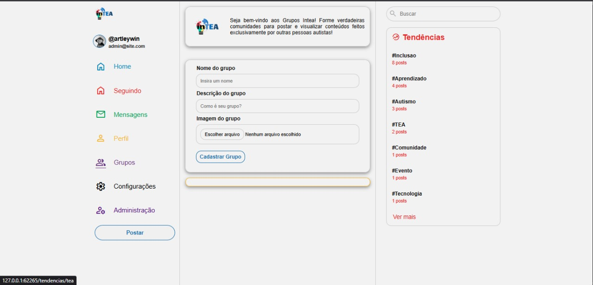
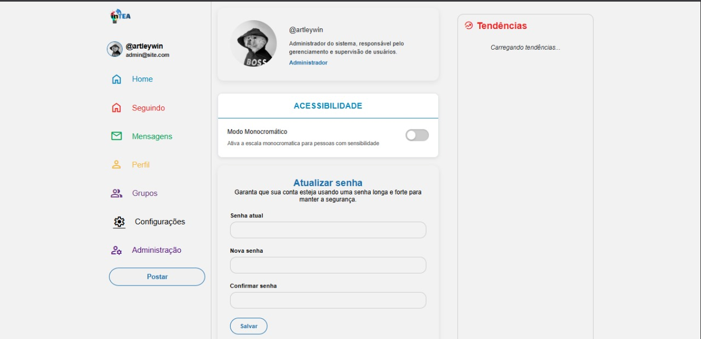
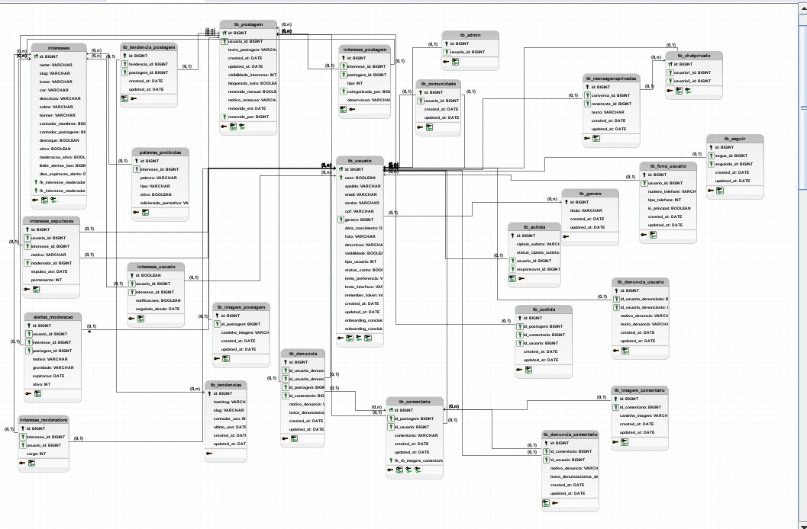

Participar
Perfis e publicações dão espaço à expressão individual. O feed reúne as conversas, com recursos de curtidas e respostas.
Estudo de caso · ETEC de Guaianazes · 2025
Uma rede social pensada para aproximar pessoas autistas, responsáveis e outras pessoas da comunidade. Um projeto em equipe que começou pela escuta e ganhou forma em pesquisa, modelagem e desenvolvimento web.

Como um sistema web pode apoiar a socialização e a troca de experiências na comunidade autista?
Essa pergunta orientou o INTEA, desenvolvido na ETEC de Guaianazes como TCC do curso técnico em Desenvolvimento de Sistemas. A equipe Espectrum partiu da vontade de criar um espaço de convivência para pessoas autistas, responsáveis e quem busca participar dessa comunidade.
O desafio envolvia pensar em diferentes formas de participação, organizar as conversas e prever ferramentas para acompanhar e moderar o conteúdo compartilhado.
A equipe reuniu pesquisa bibliográfica, um questionário exploratório com 35 respostas e entrevistas com familiares, pessoas autistas e uma psicóloga. Essa escuta orientou a discussão sobre comunicação, apoio e espaços de convivência.
Os papéis de pessoa autista, responsável, comunidade e administração ajudaram a definir os percursos. Casos de uso, classes e o modelo de dados foram usados para relacionar pessoas, ações e permissões.
O trabalho considerou diferentes formas de acesso e optou por um site responsivo. A escolha levou a proposta para o navegador, considerando o uso em computadores e dispositivos móveis.
Registros das telas apresentados pela equipe no TCC.
Perfis e publicações dão espaço à expressão individual. O feed reúne as conversas, com recursos de curtidas e respostas.
Grupos e espaços de comunidade organizam encontros em torno de assuntos compartilhados. As mensagens complementam a interação entre pessoas.
Denúncias e recursos de moderação fazem parte do projeto, conectando a experiência de uso ao acompanhamento administrativo.




Minha atuação reuniu interfaces em Blade, CSS e JavaScript e integrações com Laravel. Trabalhei nas configurações, nas preferências de apresentação e na responsividade, além de correções pontuais nos fluxos de cadastro.
A base técnica conecta rotas, controladores e modelos aos templates Blade. O projeto também utiliza JavaScript, HTML, CSS e MySQL, além de uma integração com Pusher para comunicação.
O modelo de dados torna visíveis as relações entre usuários, postagens, comentários, interesses, mensagens e denúncias. Essa organização ajuda a entender como as diferentes partes da rede social se conectam.
Os exemplos abaixo mostram parte das minhas contribuições. Também atuei como revisor do código dos colegas da equipe durante o desenvolvimento.
Estruturei a página de configurações e contribuí para a implementação inicial da preferência visual monocromática. A persistência conectou a interface Blade e o JavaScript a campos no modelo de usuário, na migração e a uma rota autenticada do Laravel. O recurso recebeu evoluções posteriores da equipe.
Ajustei o CSS do perfil para telas menores, reorganizando colunas, ações, abas, publicações e modais. Os breakpoints de 768 e 480 pixels passaram a tratar a disposição desses elementos conforme a largura disponível.
Refinei o layout e a responsividade da landing page e acrescentei o botão e o comportamento de abertura e fechamento do menu mobile. Essa contribuição combina mudanças de CSS e JavaScript na apresentação do projeto.
Corrigi o retorno do cadastro da comunidade no controlador, colocando o redirecionamento para o login no caminho executado após o cadastro. Foi um ajuste pontual no fluxo da aplicação.

As decisões sobre pessoas, dados e interface fazem parte da mesma construção.
O INTEA reúne pesquisa, modelagem e desenvolvimento em um trabalho de formação técnica. Os diferentes papéis influenciam o cadastro, a proposta de comunidade aparece nos grupos, e a convivência pede ferramentas de acompanhamento e moderação.
Os próximos passos para aprofundar o estudo são registrar testes de usabilidade e acessibilidade com o público, documentar o estado de cada funcionalidade e acompanhar novas decisões técnicas com exemplos e testes.
Base deste estudo: TCC do INTEA, equipe Espectrum, ETEC de Guaianazes, 2025, e repositório do projeto (abre em nova aba). As imagens são registros do documento acadêmico de 2025.
Você pode explorar o código do INTEA, conhecer os outros projetos ou falar comigo sobre o trabalho.